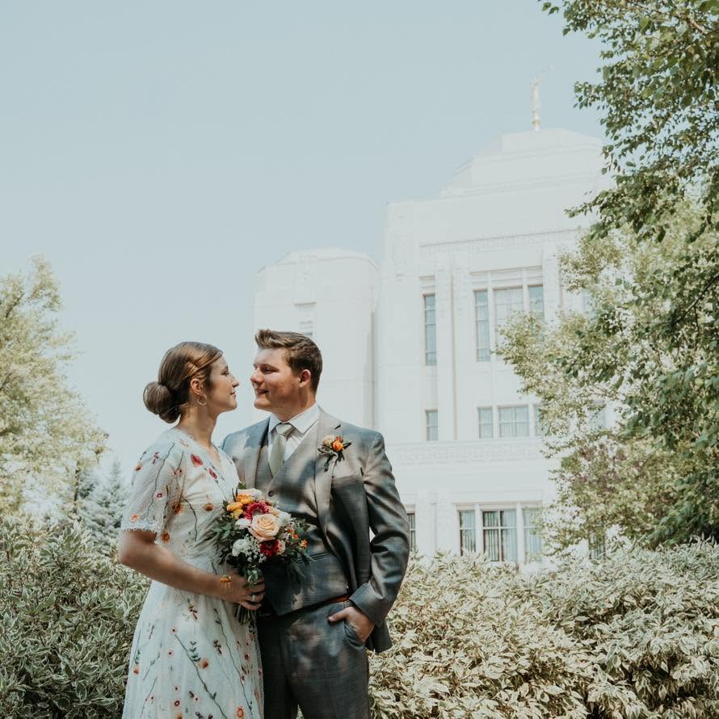

Spencer's Portal Page

I am a husband and soon-to-be father. My wife and I were married two-and-a-half years a ago. We are both seniors at BYU-Idaho. I study Psychology, emphasising Industrial-Organizational Psychology, with additional focuses in Statistics, Data Science, and Computer Programming.
My long term goals include becoming a Religious Educator to the Church of Jesus Christ of Latter-day Saints, earning a masters degree in Research Methodology and/or Program Evaluation, and earning a Ph.D. in a similar field. The end goal is to become a professor of Psychology and help teach an inspire students of psychology to love and contribute to the field.
My hobbies include video game programming, playing Dungeon & Dragons, and spending time outdoors with my wife and friends. I also enjoy what my wife calls "tinkering" which is hobby level CAD, 3d printing, and electronics (like arduino).
- R and RStudio: tidyverse including stringr, dyplr, ggplot2; leaflet; quarto
- Linear regression analysis and modeling
- ANOVA design and analysis
- General parametric and non-parametric statistics
- Intermediate C#, python, HTML, CSS
Technical Skills
- I've had a few jobs over the past few years
- I've been a TA for several stats and data science classes
- I've worked in human services a few times (RBT, Residential Habilitation).
Other Resume-esque Stuff